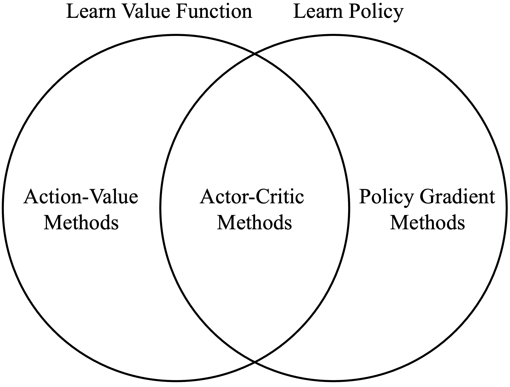

Actor-Critic Framework
Revised January 2, 2025
The Policy Gradients note is optional but recommended background reading.
Action-value reinforcement learning methods (e.g., Deep Q-learning) select actions by estimating the expected return for each action in a given state. Policy gradient algorithms, by contrast, (e.g., REINFORCE) optimize a parameterized policy directly. Actor-Critic methods are a hybrid approach, combining these paradigms by separately approximating the policy (the “actor”) and the value function (the “critic”).
|  |
| Image from Policy Gradient, Lectures on Reinforcement Learning (2015) by David Silver. |
Actor-critic methods are designed to address the limitations of standard policy gradient approaches. Consider the update rule for REINFORCE, a foundational policy gradient method:
\[ \begin{align}\label{eq:reinforce-update} \theta_{t+1} &= \theta_t + \alpha \gamma^t G_t \nabla_\theta \ln \pi(a_t \mid s_t; \theta) \;. \end{align} \]
Because Equation \(\eqref{eq:reinforce-update}\) relies on the complete return, \(G_t\), REINFORCE is a Monte Carlo (MC) method. Like other MC methods, REINFORCE can exhibit high variance and sample inefficiency due to its reliance on complete trajectories. Actor–Critic methods replace the Monte Carlo return \(G_t\) in the policy-gradient update with an action-value function \(Q(s_t,a_t;\psi)\), which is estimated using temporal-difference (TD) learning. Because TD uses bootstrapped targets instead of full returns, the resulting gradient estimates have lower variance and improved sample efficiency relative to MC methods.
Actor-critic methods comprise two components: an actor and a critic. The actor selects actions according to the current policy, \(\pi\). The critic evaluates the quality of these actions by computing the TD error or Advantage (using \(V(s)\)), or by estimating \(Q(s,a)\). This evaluation guides the actor in adjusting the policy to achieve better performance. Fundamentally, the actor decides what to do, and the critic evaluates those decisions, providing a scalar learning signal (TD error, advantage, or \(Q\) estimate) that the actor uses to improve the policy..
The Critic
In practice, both the actor and the critic are implemented as parameterized models, often using neural networks. These models are often governed by distinct parameter sets, \(\theta\) for the actor and \(\psi\) for the critic.
Because the critic estimates a value function, its parameters, \(\psi\), are updated to minimize the squared TD error:
\[ \begin{equation}\label{eq:td-error} \delta_t = r_{t+1} + \gamma Q(s_{t+1}, a_{t+1}; \psi) - Q(s_t, a_t; \psi) \;, \end{equation} \]
This error yields the following update rule:
\[ \begin{equation}\label{eq:critic-update} \psi \leftarrow \psi + \alpha^\psi \delta_t \nabla_{\psi} Q(s_t, a_t; \psi) \;. \end{equation} \]
Importantly, while action-value methods like Q-learning and its derivatives, such as deep Q-learning, directly learn the \(Q\)-function associated with the optimal policy, actor-critic methods learn the \(Q\)-function corresponding to the actor's policy, \(\pi(a \mid s; \theta)\). Although the actor does not directly appear in the critic's update rule, it indirectly influences the critic's updates because the actions \(a_t\) and \(a_{t+1}\) are sampled from the actor's policy, \(\pi(a \mid s; \theta)\).
Note that while the action-value function is used in Equations \(\eqref{eq:td-error}\) and \(\eqref{eq:critic-update}\), the state-value function is a valid and commonly used alternative.
The Actor
Because the actor learns a parameterized policy, its loss function is derived from the policy gradient theorem:
\[ \begin{align} \nabla_\theta J(\theta) &\propto \sum_{s \in \mathcal{S}} \mu(s) \sum_{a \in \mathcal{A}} Q_\pi(s, a) \nabla_\theta \pi(a \mid s; \theta) \nonumber \\ &= \mathbb{E}_{s \sim \mu, a \sim \pi(\cdot \mid s; \theta)} \left[ Q_\pi(s_t, a_t) \nabla_\theta \ln \pi(a_t \mid s_t; \theta) \right] \;. \label{eq:pgt} \end{align} \]
Unlike pure policy gradient methods, however, actor-critic methods do not compute the true policy gradient. Instead, they approximate it using the value function estimated by the critic, which guides the agent toward policies the critic predicts will yield higher rewards. Concretely, the true value function in Equation \(\eqref{eq:pgt}\) is replaced by the critic's estimate, yielding:
\[ \begin{equation*} \nabla_{\theta} J(\theta) \approx \mathbb{E}_{s \sim \mu, a \sim \pi(\cdot \mid s; \theta)} \left[ Q(s, a; \psi) \nabla_{\theta} \ln \pi(a \mid s; \theta) \right] \;, \end{equation*} \]
where \(Q(s, a; \psi)\) is the value provided by the critic.
Note that the critic does not need to estimate the action-value function \(Q(s, a; \psi)\) as in Equations \(\eqref{eq:td-error}\) and \(\eqref{eq:pgt}\). It could be \(\delta_t\) or other critic-derived signals (e.g., advantages) as long as they provide a suitable surrogate for \(Q_\pi\) or the advantage and yield a (possibly biased but useful) gradient estimator. Indeed, many of the most popular actor-critic methods, such as TRPO and PPO, use a variety of objectives. For example, one-step actor-critic, the policy gradient analog of TD(0), uses the state-value function \(V(s; \psi)\) to compute TD error:
 |
References
- Reinforcement Learning: An Introduction (2018)
Richard S. Sutton and Andrew G. Barto
- Policy Gradient, Lectures on Reinforcement Learning (2015)
David Silver
- Actor-Critic Algorithms, Advances in neural information processing systems (2000)
Vijay R. Konda and John N. Tsitsiklis